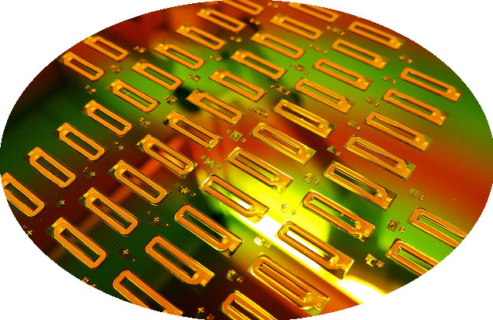

Microengineering Cleanroom Laboratory
Dartmouth College
Thayer School of Engineering
Director: Christopher G. Levey
Founder: Albert K. Henning
{kind=link}
top | Lab Imagemap | Overview | Research | Facilities/Equipment | Processing | Protocols | Course Labs | Career Jobs | Related Web Sites | bottom
 To the left is an image map of the laboratory: you can click on a piece of equipment for more information about it, or use the text map instead.
More unmapped images here
To the left is an image map of the laboratory: you can click on a piece of equipment for more information about it, or use the text map instead.
More unmapped images here
Overview
The Dartmouth Solid State Microengineering Laboratory includes class 100 and 1000 cleanroom laboratories, located in room 223 of Cummings Hall at the Dartmouth College Thayer School of Engineering in Hanover, NH 03755-8000. Currently funded research includes applications in microelectronics, micromachining, MEMS, and binary optics. Equipment is available for photolithography; e-beam lithography; wet chemical processing; film deposition and processing; analysis; and design, layout, and simulation.The microengineering laboratory is available to qualified members of the Dartmouth community, and by arrangement to other local research interests. Lab work in the cleanroom is an integral part of several undergraduate courses. Students with projects in the cleanroom range from first year undergraduates to graduate students.
Research
- Micro-fabricated inductors and other magnetic components; collaboration with Prof. Sullivan; publications.
- MEMS Micro-Robot (Dartmouth Engineer Micro-Robot article)
- Autonomous locomotion in microelectromechanical scratch drives
- Stress Engineered Microsystems (work leading to micro robots)
- Switched thin film thermocouple arrays: NNF fabrication, publications list, example image, and patent.
- Aberration correcting binary optics for deep scanning confocal microscopy: full text and figures of a recent publication (Optics Letters); publications list.
- Stress Engineered Microsystems (SEMS) for out-of-plane micromechanical devices: image of cantilevers and publications list.
- Microfluidic devices.
- Movable Biological Cell Impedance Probe
- Other micromechanical devices (flow and viscosity sensors, oscillators, ...)
- Atomic Force Microscopy and Scanning Kelvin Probe Microscopy: example images and publications list.
- Submicron fiducial grids for measuring micro-deformation of ductile intermetallics: publications list.
- Thin film interface strength and toughness measurements at microfabricated defects: publications list, and summary of measurement technique.
- The ice FET--measuring electrical properties of the ice/solid interface: publications.
- Microfabricated electrode arrays for oriented protein growth; research of Gibson group (formerly Thayer).
-
Collaborations with other departments at Dartmouth:
- Bruce Donald (Computer Science, formerly Dartmouth now at Duke)
- Martin Wybourne (Dartmouth Physics)
- Alex Rimberg (Dartmouth Physics)
- Sekhar Ramanathan (Dartmouth Physics)
- Joe BelBruno (Dartmouth Chemistry)
- Barjor Gimi (Dartmouth Radiology and Engineering)
{kind=link}
{kind=link}
Processing Information
and
Safety Data

Facilities, Equipment (including layout CAD, Cadence tools, ...)
Undergraduate Curriculum
Research
Career opportunities
Related Web Sites
This page has served
|
|
Dartmouth Engineering | Microengineering Lab | Levey Homepage |